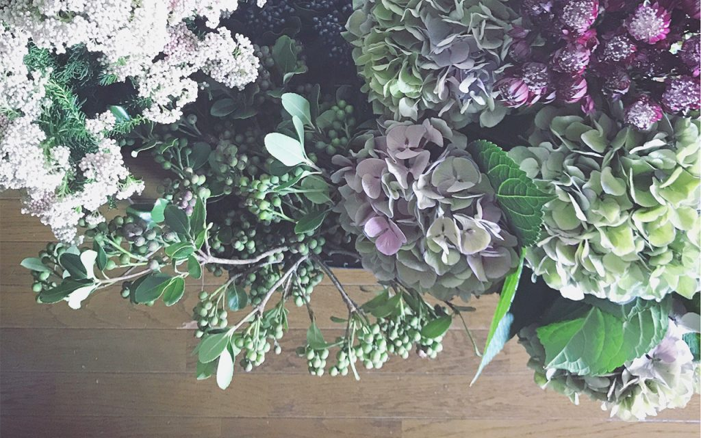

2019年11月3日（日）
11:00〜16:00
1 day Flower Shop
オープンスタジオ
開催場所
EverGreen-wedding
横浜市中区山下町25-2インペリアルビル403号室
開催日時
料金
¥110〜
(お花１本からお買い上げいただけます)
申込方法
申込不要です。直接会場へお越しください。
イベント内容
歴史建造物のビルのドレスアトリエで、１日限りのお花屋さんがオープンします。
横浜、鎌倉で活動している ombrageさんがセレクトした、季節のお花や鉢植えが並びます。
お花は１本からお買い物でき、何本かまとめてご購入いただくとテーブルブーケを作る無料のワークショップも体験できます。
お持ち帰り用に取手のついた、ペーパークラフトにお入れいたします。
そのままおうちに飾ったり、大切な誰かに贈ったり。
お花のある暮らしをお楽しみください。